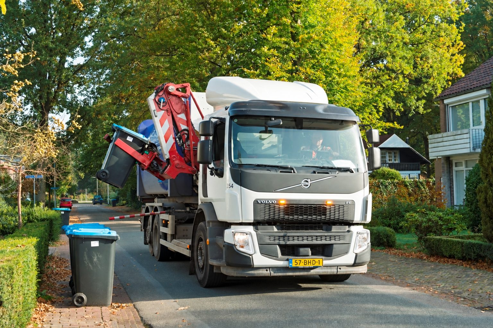
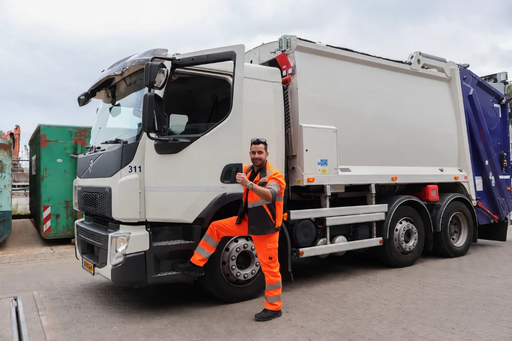

Elke dag
vol aan de bak
vol aan de bak
01 · WERKEN
Ik wil aan de slag
Begin als belader, geen ervaring nodig
Bekijk vacatures →
02 · OPLEIDEN
Ik wil chauffeur worden
Rijbewijs C/CE en Code 95 betaald, binnen ±5 maanden
Bekijk het traject →
03 · ONTDEKKEN
Ik wil meer informatie
Scholing, kosten en wie we zoeken
Lees meer →
Nieuwste vacatures
Alle {{ jobCount }} vacatures →
OPLEIDING TOT CHAUFFEUR
Van belader naar
Bekijk het traject
Meld je aan
Van belader naar
chauffeur-belader
Gemotiveerde beladers groeien door via een gericht opleidingstraject. Wij betalen je rijbewijs C/CE en Code 95, samen met regionale rijscholen.

1Start als belader
2Opleidingspool
3Rijbewijs C/CE + Code 95
4Chauffeur-belader
€ 0opleidingskosten voor jou
C/CErijbewijs + Code 95 betaald
±5 mndvan belader tot chauffeur
Klaar om aan
de bak te gaan?
Vacatures in de afval
Werk in de afvalinzameling in Ede, Renkum, Renswoude, Scherpenzeel, Veenendaal en Wageningen.
{{ resultLabel }}
Geen vacatures met deze filters. Wis filters
← Terug naar vacatures
{{ job.category }}
{{ m.label }}
{{ job.title }}
{{ job.intro }}
{{ job.day }}
Wat ga je doen?
- {{ t }}
Wie ben jij?
- {{ t }}
Wat bieden we?
- {{ t }}
Doorgroeien naar chauffeur?
Bekijk het traject →
Bij deze functie kun je instromen in het opleidingstraject.
Zo gaat solliciteren
Laat je naam en telefoonnummer achter. Binnen 2 werkdagen bellen we je voor een kort, vrijblijvend gesprek. Klikt het? Dan plannen we een kennismaking en een meeloopdag, zodat je precies weet wat je kunt verwachten. Een cv is niet nodig.
OPLEIDING TOT CHAUFFEUR
Jouw weg naar
Meld je aan
Jouw weg naar
chauffeur
Begin als belader en groei door tot chauffeur-belader. Wij betalen je rijbewijs C/CE en Code 95. Afhankelijk van je beginsituatie en de planning ben je binnen vijf maanden klaar.
Zo werkt het traject
{{ s.n }}
{{ s.title }}
{{ s.text }}
Wat kost het jou?
Niets. Rijbewijs C/CE, Code 95 en de lessen bij de rijschool worden betaald. Tijdens de opleiding blijf je werken als belader.
Wie zoeken we?
Gemotiveerde beladers die verder willen. Rijbewijs B is genoeg om te beginnen.
Klaar voor de volgende stap?
Laat je gegevens achter, dan nemen we contact met je op.
Meld je aan →
AANMELDEN OPLEIDING
Word chauffeur op de vuilniswagen
Laat je gegevens achter. We bellen je om je beginsituatie te bespreken en de planning te maken.
✓ Rijbewijs C/CE betaald✓ Code 95 betaald✓ Binnen ±5 maanden klaar
Meld je aan
Meld je aan
Je bent aangemeld!
We nemen binnen 2 werkdagen contact met je op. Ondertussen alvast aan de slag als belader?
Bekijk vacatures